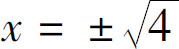
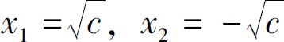
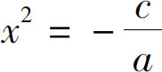
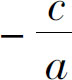

现在，我们要一起讨论二次方程的问题．二次方程是初中数学的核心知识，前边学习的一切知识，几乎全都是为二次方程做准备的，学会了二次方程，我们就拥有了改变世界的能力．前文已经反复提到，二次方程问题普遍存在于生产生活之中，当我们每一次做出选择的时候，它都会在这些选择的背后潜移默化地改变我们周围的世界．那么，当我们在生活中遇到一个具体问题的时候，如何判断它是不是一个二次方程的问题呢？
首先，需要判断自己遇到的问题是不是一个选择问题．当我们面临一个选择困境的时候，这个问题要么是一个二元问题，要么就是一个二次问题．所谓二元问题，就是指我们要在两个不同的事物间做出选择．这两个选择之间的关系不是特别紧密，比如你现在手里有一笔钱，那么你是买吃的还是买穿的呢？决定了要买穿的以后，你仍然需要选择，是买上衣还是买裤子呢？这都是二元问题，因为买上衣还是买裤子之间没什么必然关系，实际上怎么选择都是可以的．
但是当我们面对二次问题的时候，想做出一个合理的选择就会困难很多，所谓二次问题常常是要对同一个事物的不同程度、同一件事情的不同方式做出选择．比如，卖东西的时候定价定在多少呢？晚上能不能熬夜学习呢？这些就属于二次问题．为什么二次问题都很难选择呢？这是因为，我们做出的选择本身，会再次反过来影响我们选择的目的．我提高价格的目的是为了多赚钱，但是因为提价导致客户减少了，这又会导致我少赚钱，这不是影响了我的目的吗？同样，我熬夜的目的是多学点东西，但是熬夜以后第二天精神状态不好，就会再次反过来影响我的学习．因为我们的选择会再次施加影响，所以就叫二次问题．
我们都知道，含有未知数的变量就叫作方程，因此变量的最高次数等于2的方程就叫作二次方程．下面我们就看一个二次方程：x 2 ＝4．这就是一个最简单二次方程，首先它是一个含有变量x 的等式，其次这个变量x 的次数是2，所以它肯定是二次方程．那么这个方程怎么解呢？给4开个方就行，但是不能忘了，开方的结果是有两个解的，所以这个问题的结果是

，即x ＝±2．一般在这种情况下，我们会把两个解分开，写作x 1 ＝2，x 2 ＝－2．那么，二次方程一定有解吗？不一定．比如x 2 ＝－4就没有实数解，因为所有数字的平方都是大于等于0的，所以在实数范围内，－4是不能开方的，我们自然就不知道x 等于多少了．那么，如果x 2 ＝0呢，显然它就只有一个解x ＝0，如果我们把这些数字转换成字母，那就变成了最简二次方程的一般形式．
当遇到x 2 ＝c 的问题时，我们要先讨论常数项c 的取值范围．当c ＞0时，方程有两个实数根，分别是

；当c ＝0时，方程只有一个根x ＝0；当c ＜0时，方程在实数范围内无解．下面我们增加一下难度，为二次项增加一个系数a ，方程就变成了a x 2 ＋c ＝0，此时，我们首先应该把c 移到方程右边，得到a x 2 ＝－c ，然后在方程左右两侧同时除以a ，消去二次项的系数，得到

，这样一来，方程在形式上就是x 2 等于常数的形式了，继续分情况讨论
的取值范围就可以求解了．可见，在处理二次方程的时候，移项、合并同类项、消除系数的这些基本知识，全部都是可用的．遇到任何问题，我们都得先化简，然后求值．
看起来，如果只是增加二次项系数，问题并不难解决．但是如果这二次方程里边有了一次项系数又会如何呢？比如：x 2 －6x ＋9＝0，这个方程怎么解呢？我们一看，这个方程左边符合完全平方公式，于是我们就可以把它转变为（x －3）2 ＝0的形式，这样一来，原方程就又变成一个算式的平方等于几的形式了．（x －3）2 ＝0，那就说明x －3＝0，所以x 只能等于3．
有了完全平方公式，解决二次方程好像也不困难，可是一旦方程的系数稍微有一点变化，问题就复杂了．比如：x 2 －6x ＋5＝0，我们只是修改了常数项，这个方程又应该怎么解呢？这时候就需要因式分解来帮忙了．为什么因式分解可以帮我们解决二次方程的问题呢？因为经过因式分解以后，变成两个式子的乘积，如果两式相乘等于0，必须要这两个式子之一等于0才能满足．我们给左边的式子做个因式分解，用十字相乘看看，有没有哪两个数相加等于－6，相乘等于5呢？－1和－5可以，所以原方程分解因式以后就是（x －1）（x －5）＝0，等式成立，必须让两个因式分别等于0了．由x －1＝0可以得到x 1＝1；由x －5＝0可以得到x 2＝5．
以上就是通过因式分解求解二次方程的方法．需要注意的是，我们做因式分解的时候，必须得把所有的项都移到方程左边来．如果因式分解完了以后，等式右边还有数字，那可就白费劲了，如果这两个式子相乘要是等于4，那我们就无从判断每个算式分别等于多少了，因为相乘等于4的数字有无数对．只有两式相乘等于0时，我们才能继续求解．从这里，我们可以再次领略到数字0的神奇魅力．
通过分析，我们发现：利用公式法和因式分解对二次方程求解，根据系数和常数项的取值范围不同，二次方程的解可能是一个、两个，甚至可能没有解．